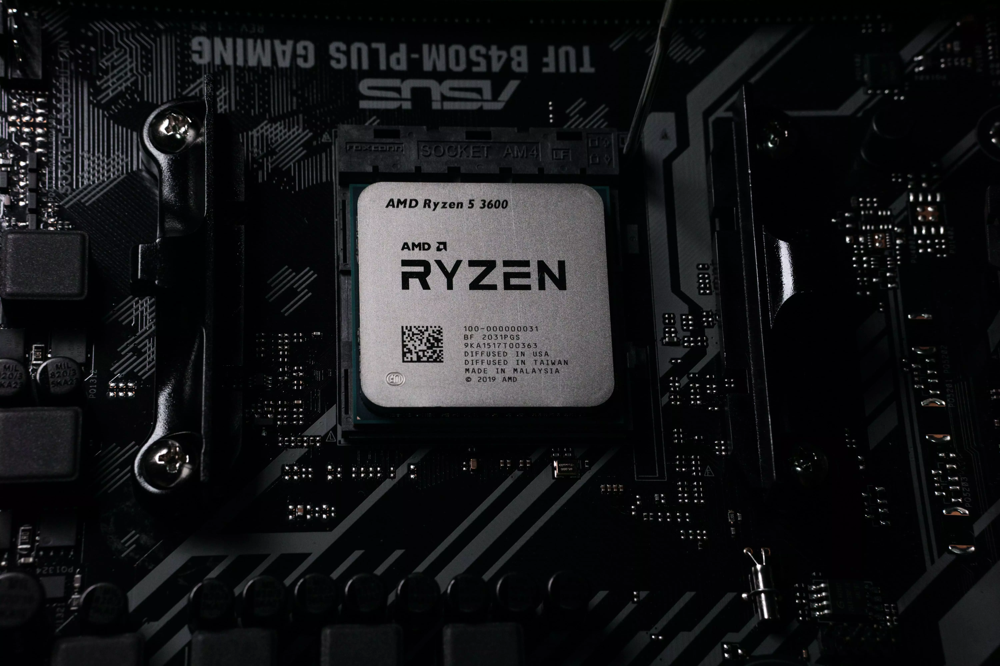
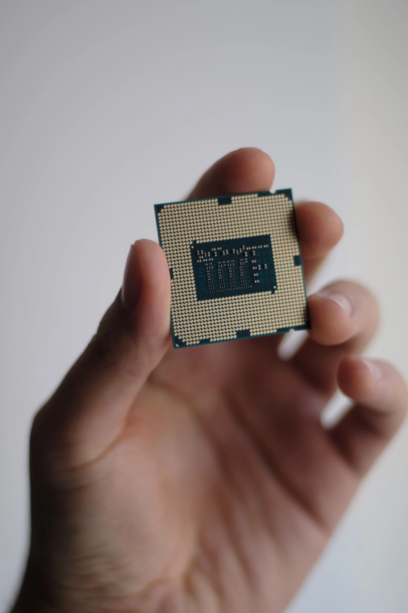

<<<<<<< Updated upstream
=======
>>>>>>> Stashed changes
Unità Di
Elaborazione Centrale
Processore o
CPU
E' l'unità o sottosistema logico e fisico che sovraintende alle funzionalità logiche di elaborazione
principali del computer.
Attualmente la CPU è implementata attraverso un microprocessore digitale
general purpose, basato tipicamente su un'architettura a registri generali.
La CPU ha dunque il compito di eseguire le istruzioni di un programma presente nella ROM in fase di
boot, nella memoria centrale (o primaria, es. RAM) dopo averlo prelevato dalla memoria secondaria (o
di massa) o da altri dispositivi.
<<<<<<< Updated upstream
Scopri di più
=======
Scopri di più
>>>>>>> Stashed changes
<<<<<<< Updated upstream
=======
>>>>>>> Stashed changes
Suddiviso In
Unità Di Controllo (CU)
E' un componente delle CPU che ha il compito di
coordinare tutte le azioni necessarie per l'esecuzione di una istruzione e di insiemi di istruzioni. È
il componente che dà la possibilità al microprocessore di eseguire istruzioni diverse. Le azioni che
coordinano i vari settori della CPU (la ALU, i registri, il Write-Back) vengono dette micro-operazioni
o micro-istruzioni. Un insieme di micro-istruzioni viene detto micro-programma.
Unità Aritmetico Logica (ALU)
Una unità aritmetica e logica o unità
aritmetico-logica, in informatica, è una tipologia particolare di processore digitale che si
contraddistingue per essere preposta all'esecuzione di operazioni aritmetiche o logiche.
Esegue infatti tutte le operazioni aritmetiche e
logiche del processore.
Registri
Per eseguire le operazioni elementari il
processore utilizza delle memorie di piccole
<<<<<<< Updated upstream
dimensioni fisicamente interne al processore, i
=======
dimensioni fisicamente interne al processore, i
>>>>>>> Stashed changes
registri,
alle quali accedere in modo veloce
per trasferire i dati dalla/alla memoria e
per salvare i risultati parziali delle operazioni
aritmetiche e logiche.
Sono solitamente poche decine (32-64)
Funzionamento
L'esecuzione di un programma richiede
– Caricamento del programma in memoria centrale
– Per ogni istruzione del programma, l'esecuzione di
tre operazioni
<<<<<<< Updated upstream
=======
>>>>>>> Stashed changes
- Fetch
- Preleva, dalla locazione di memoria il
cui indirizzo è specificato nel Program Counter,
l’istruzione da eseguire e la carica nel Registro
Istruzione
- Decode
- Decodifica l’istruzione da eseguire
- Execute
- Esegue le operazioni corrispondenti
all’istruzione

Clock
Regola il funzionamento del processore: ad intervalli regolari viene
inviato un segnale, detto impulso di clock, durante il quale il
microprocessore svolge un'operazione elementare.
La durata di un ciclo di clock oggi è inferiore
ai ns

Frequenza Di
Clock
È uno dei parametri caratteristici di un
processore, infatti è indice della velocità.
Dire che un computer lavora a 3GHz significa che
in un secondo sono inviati 3 miliardi di impulsi di
clock
<<<<<<< Updated upstream
=======
>>>>>>> Stashed changes
Elaborazione Centrale
Processore o
CPU
E' l'unità o sottosistema logico e fisico che sovraintende alle funzionalità logiche di elaborazione
principali del computer.
Attualmente la CPU è implementata attraverso un microprocessore digitale
general purpose, basato tipicamente su un'architettura a registri generali.
La CPU ha dunque il compito di eseguire le istruzioni di un programma presente nella ROM in fase di
boot, nella memoria centrale (o primaria, es. RAM) dopo averlo prelevato dalla memoria secondaria (o
di massa) o da altri dispositivi.
<<<<<<< Updated upstream
Scopri di più
=======
Scopri di più
>>>>>>> Stashed changes
Suddiviso In
Unità Di Controllo (CU)
E' un componente delle CPU che ha il compito di coordinare tutte le azioni necessarie per l'esecuzione di una istruzione e di insiemi di istruzioni. È il componente che dà la possibilità al microprocessore di eseguire istruzioni diverse. Le azioni che coordinano i vari settori della CPU (la ALU, i registri, il Write-Back) vengono dette micro-operazioni o micro-istruzioni. Un insieme di micro-istruzioni viene detto micro-programma.
Unità Aritmetico Logica (ALU)
Una unità aritmetica e logica o unità aritmetico-logica, in informatica, è una tipologia particolare di processore digitale che si contraddistingue per essere preposta all'esecuzione di operazioni aritmetiche o logiche. Esegue infatti tutte le operazioni aritmetiche e logiche del processore.
Registri
Per eseguire le operazioni elementari il processore utilizza delle memorie di piccole <<<<<<< Updated upstream dimensioni fisicamente interne al processore, i ======= dimensioni fisicamente interne al processore, i >>>>>>> Stashed changes registri, alle quali accedere in modo veloce per trasferire i dati dalla/alla memoria e per salvare i risultati parziali delle operazioni aritmetiche e logiche. Sono solitamente poche decine (32-64)
Funzionamento
L'esecuzione di un programma richiede – Caricamento del programma in memoria centrale – Per ogni istruzione del programma, l'esecuzione di tre operazioni
-
<<<<<<< Updated upstream
- Fetch
- Preleva, dalla locazione di memoria il cui indirizzo è specificato nel Program Counter, l’istruzione da eseguire e la carica nel Registro Istruzione
- Decode
- Decodifica l’istruzione da eseguire
- Execute
- Esegue le operazioni corrispondenti all’istruzione
Regola il funzionamento del processore: ad intervalli regolari viene
inviato un segnale, detto impulso di clock, durante il quale il
microprocessore svolge un'operazione elementare.
La durata di un ciclo di clock oggi è inferiore
ai ns
È uno dei parametri caratteristici di un processore, infatti è indice della velocità. Dire che un computer lavora a 3GHz significa che in un secondo sono inviati 3 miliardi di impulsi di clock